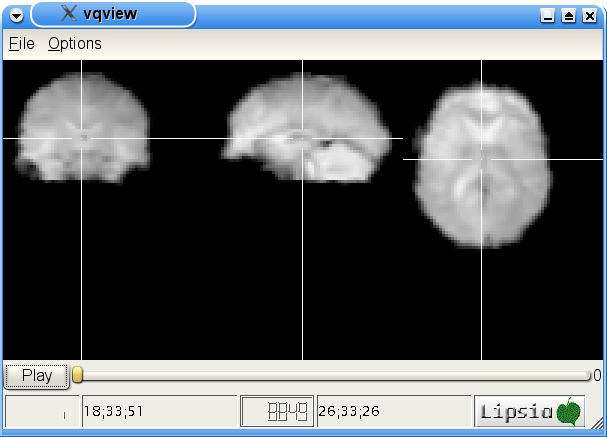
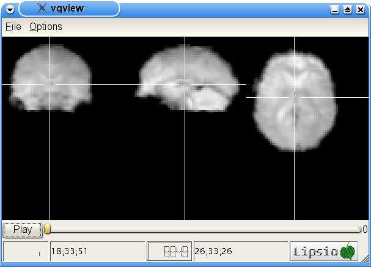
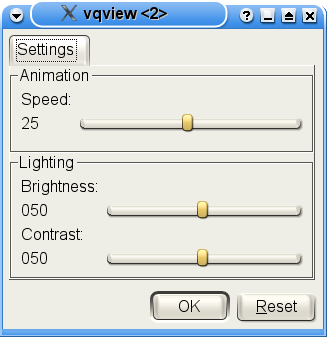

'vqview' is a rawdata rendering program. The rawdata is rendered like the well known vlview. According to the 3D view of the data, you can choose one of the possible timesteps or just start an animation to view them all.

'vqview' is a rawdata rendering program. The rawdata is rendered like the well known vlview. According to the 3D view of the data, you can choose one of the possible timesteps or just start an animation to view them all.
vqview -in rawdata.v
It may take some time, to convert the given raw data to a renderable data structure.
Pressing < Ctrl-P >, or just klicking Preferences in the Options-menu opens the preference dialog.
Here is it possible, to adjust the contrast and brightness using the corresponding sliders. A change of that values is instantaneous visible.
The third slider is for adjusting the animation speed. The values says how much frames per second are visible. Changes of this sliders will also be saved instantaneous, but will not be used until you restart the animation. Which simply means stop the current animation (if there is one) and start a new one.
Be aware! The speed of the animation depends on your hardware. It is possible that rendering a frame takes more time than you want.
Max
Planck Institute for Human Cognitive and Brain Sciences. Further
Information: lipsia@cbs.mpg.de